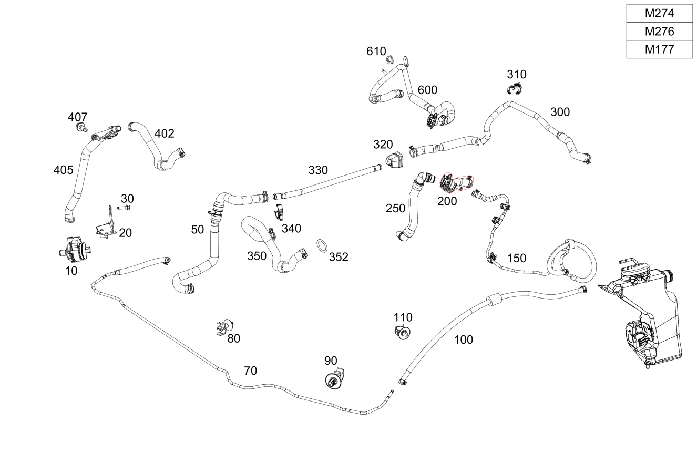

| № | Артикул | Название | Кол. | Примечание | Ограничение |
|---|---|---|---|---|---|
| 10 | A 204 835 03 64 | Циркуляционный насос (CIRCULATION PUMP) | 1 | M274+M20+M014/M274+(ME05/228)/M264+228 | |
| 20 | A 253 501 11 00 | Держатель (HOLDER) | 1 | Циркуляционный насос | M274+M20+M014/M274+(ME05/228)/M264+228 |
| 50 | A 253 506 02 35 | Шланг отопителя (HOT WATER HOSE) | 1 | К автономному отопителю Рулевое управление: Влево | 228/ME05 |
| 70 | A 253 830 61 00 | Шланговый трубопровод (HOSE LINE) | 1 | Обратная магистраль, от разъема к циркуляционному насосу | 875/875+(ME05+M274/228/M274+M014) |
| 70 | A 253 830 81 01 | Шланговый трубопровод (HOSE LINE) | 1 | Обратная магистраль, от разъема к циркуляционному насосу | 875+(ME05+M274/228/M274+M014) |
| 80 | A 004 995 48 77 | Крепеж (трубо)провода (LINE FASTENER) | 1 | Шланговый трубопровод к поперечине | 875 |
| 90 | A 000 995 39 03 | Крепеж (трубо)провода (LINE FASTENER) | 1 | Шланговый трубопровод к поперечине | 875 |
| 90 | A 000 995 31 04 | Крепеж (трубо)провода (LINE FASTENER) | 1 | Шланговый трубопровод к поперечине | 875 |
| 100 | A 205 830 84 02 | Шланговый трубопровод (HOSE LINE) | 1 | Обратная магистраль, от теплообменника к разъему | 875 |
| 100 | A 253 830 87 01 | Шланговый трубопровод (HOSE LINE) | 1 | Обратная магистраль, от теплообменника к разъему | 875 |
| 100 | A 253 830 09 02 | Шланговый трубопровод (HOSE LINE) | 1 | Обратная магистраль, от теплообменника к разъему | 875 |
| 110 | A 000 995 33 14 | Держатель (HOLDER) | 1 | Крепление шлангового трубопровода | 875 |
| 150 | A 253 830 93 00 | Шланговый трубопровод (HOSE LINE) | 1 | От теплообменника к перегородке Рулевое управление: Влево | 875 |
| 150 | A 205 830 80 04 | Шланговый трубопровод (HOSE LINE) | 1 | От теплообменника к перегородке Рулевое управление: Вправо | 875 |
| 150 | A 205 830 59 05 | Шланговый трубопровод (HOSE LINE) | 1 | От теплообменника к перегородке Рулевое управление: Влево | 875 |
| 150 | A 205 830 61 05 | Шланговый трубопровод (HOSE LINE) | 1 | От теплообменника к перегородке Рулевое управление: Вправо | 875 |
| 150 | A 253 830 94 00 | Шланговый трубопровод (HOSE LINE) | 1 | От теплообменника к перегородке Рулевое управление: Влево | 875+U77 |
| 200 | A 205 830 51 02 | Шланговый трубопровод (HOSE LINE) | 1 | От теплообменника к перегородке Рулевое управление: Влево | -(228/M654/M656) |
| 200 | A 205 830 08 02 | Шланговый трубопровод (HOSE LINE) | 1 | От теплообменника к перегородке Рулевое управление: Влево | (875/U77)+-228 |
| 200 | A 205 830 08 02 | Шланговый трубопровод (HOSE LINE) | 1 | От теплообменника к перегородке Рулевое управление: Влево | 875 |
| 300 | A 205 506 18 60 | Трубка отопителя (HEATING WATER LINE) | 1 | Разъемы к теплообменнику Рулевое управление: Влево | 228/ME05 |
| 300 | A 205 506 19 60 | Трубка отопителя (HEATING WATER LINE) | 1 | Разъемы к теплообменнику Рулевое управление: Влево | (228/ME05)+875 |
| 300 | A 205 506 20 60 | Трубка отопителя (HEATING WATER LINE) | 1 | Разъемы к теплообменнику Рулевое управление: Влево | (228/228+875)+U77 |
| 300 | A 205 830 09 02 | Шланговый трубопровод (HOSE LINE) | 1 | Обратный трубопровод от теплообменника к держателю Рулевое управление: Влево | -228 |
| 300 | A 205 830 32 02 | Шланговый трубопровод (HOSE LINE) | 1 | Обратный трубопровод от теплообменника к держателю Рулевое управление: Вправо | |
| 300 | A 205 830 10 02 | Шланговый трубопровод (HOSE LINE) | 1 | Обратный трубопровод от теплообменника к держателю Рулевое управление: Влево | U77+-228 |
| 300 | A 205 830 33 02 | Шланговый трубопровод (HOSE LINE) | 1 | Обратный трубопровод от теплообменника к держателю Рулевое управление: Вправо | U77 |
| 300 | A 213 506 45 00 | Трубопровод охлаждения (HEATING LINE) | 1 | Разъемы к теплообменнику Рулевое управление: Влево | 228+B01 |
| 300 | A 213 506 48 00 | Трубопровод охлаждения (HEATING LINE) | 1 | Разъемы к теплообменнику Рулевое управление: Влево | 228+875+B01 |
| 300 | A 257 830 15 00 | Шланговый трубопровод (HOSE LINE) | 1 | Обратный трубопровод от теплообменника к держателю Рулевое управление: Влево | B01 |
| 300 | A 205 830 32 02 | Шланговый трубопровод (HOSE LINE) | 1 | Обратный трубопровод от теплообменника к держателю Рулевое управление: Вправо | B01 |
| 310 | A 004 995 58 77 | Крепеж (трубо)провода (LINE FASTENER) | 1 | Крепление трубопровода отопителя Рулевое управление: Влево | |
| 320 | A 205 830 85 02 | Держатель (HOLDER) | 1 | Обратный трубопровод | |
| 330 | A 205 830 00 02 | Шланговый трубопровод (HOSE LINE) | 1 | Обратный трубопровод от держателя к циркуляционному насосу | |
| 330 | A 205 830 29 02 | Шланговый трубопровод (HOSE LINE) | 1 | От теплообменника к перегородке Рулевое управление: Вправо | 875+-228 |
| 330 | A 238 830 57 00 | Шланговый трубопровод (HOSE LINE) | 1 | От аккумуляторной батареи к разъёму Рулевое управление: Влево | B01 |
| 332 | A 000 995 83 03 | Крепеж (трубо)провода (LINE FASTENER) | 1 | Рулевое управление: Влево | B01 |
| 336 | A 238 830 52 00 | Держатель (HOLDER) | 1 | Обратный трубопровод Рулевое управление: Влево | B01 |
| 340 | A 004 995 58 77 | Крепеж (трубо)провода (LINE FASTENER) | 1 | Крепление обратного трубопровода | -(B01+M264) |
| 350 | A 253 506 16 00 | Формовый шланг (MOLDED HOSE) | 1 | Трубопровод к переключающему клапану | 228/ME05 |
| 350 | A 205 506 16 35 | Шланг отопителя (HOT WATER HOSE) | 1 | Трубопровод к переключающему клапану | (806/807/808/809)+(228/ME05) |
| 370 | A 253 506 00 35 | Шланг отопителя (HOT WATER HOSE) | 1 | От переключающего клапана к разъему | (806/807/808/809)+(228/ME05) |
| 370 | A 253 506 15 00 | Формовый шланг (MOLDED HOSE) | 1 | Насос к клапану | 228/ME05 |
| 400 | A 253 506 04 00 | Трубопровод охлаждения (HEATING LINE) | 1 | К дополнительному водяному насосу | (228/ME05)+875+-M276 |
| 400 | A 253 506 03 00 | Трубопровод охлаждения (HEATING LINE) | 1 | К дополнительному водяному насосу | (228/ME05)+-M276 |
| 405 | A 253 830 88 01 | Шланговый трубопровод (HOSE LINE) | 1 | От насоса к разъему | M274+M20+M014+-228 |
| 405 | A 253 506 04 00 | Трубопровод охлаждения (HEATING LINE) | 1 | К дополнительному водяному насосу | (228/ME05)+875+-M276 |
| 405 | A 253 506 15 00 | Формовый шланг (MOLDED HOSE) | 1 | Насос к клапану | 228 |
| 407 | N 910143 006000 | Винт с 6-гр. глвк (HEXALOBULAR SCREW) | 1 | Крепление шлангового трубопровода; M6X12 | (581/824/670/M276+M30+M016/U77/875/M274+M20+M014)+-(228/M654/M656/M177/M264) |
| 410 | A 253 506 05 00 | Трубопровод охлаждения (HEATING LINE) | 1 | Дополнительный топливный насос к переключающему клапану | 228/ME05 |
| 410 | A 253 506 08 00 | Трубопровод охлаждения (HEATING LINE) | 1 | Дополнительный топливный насос к переключающему клапану | 228/ME05 |
| 420 | A 000 990 28 62 | Пластмассовая гайка (PLASTIC NUT) | 1 | Крепление трубопровода отопителя | 228/ME05 |
| 420 | A 000 990 99 18 | Пластмассовая гайка откр. (PLASTIC NUT OPEN) | 1 | Крепление трубопровода отопителя | 228/ME05 |
| 430 | A 004 995 58 77 | Крепеж (трубо)провода (LINE FASTENER) | 1 | Крепление трубопровода отопителя | 228/ME05 |
| 440 | A 205 830 15 02 | Шланговый трубопровод (HOSE LINE) | 1 | От переключающего клапана к двигателю | (M274/M274+875)+(228/ME05/M20+M014) |
| 440 | A 253 830 15 02 | Шланговый трубопровод (HOSE LINE) | 1 | От переключающего клапана к двигателю | (M274/M274+875)+(228/ME05/M20+M014) |
| 440 | A 253 830 53 02 | Шланговый трубопровод (HOSE LINE) | 1 | От переключающего клапана к двигателю | (M274/M274+875)+(228/ME05/M20+M014) |
| 450 | A 000 506 28 64 | Клапан (VALVE) | 1 | 228/ME05 | |
| 460 | A 253 506 05 40 | Держатель (HOLDER) | 1 | Переключающий клапан | (806/807/808/809)+(228/ME05) |
| 460 | A 213 506 02 40 | Держатель (HOLDER) | 1 | Переключающий клапан | 228/ME05 |
| 470 | N 910143 006000 | Винт с 6-гр. глвк (HEXALOBULAR SCREW) | 1 | Крепление держателя переключающего клапана; M6X12 | 228/ME05 |
| 500 | A 253 506 02 35 | Шланг отопителя (HOT WATER HOSE) | 1 | К автономному отопителю Рулевое управление: Влево | 228/ME05 |
| 510 | A 230 995 01 05 | Пружинный хомут (SPRING HOSE CLAMP) | 1 | Шланг к автономному отопителю; 24.0/26.8 MM | 228/ME05 |
| 600 | A 205 830 28 02 | Шланговый трубопровод (HOSE LINE) | 1 | От теплообменника к перегородке Рулевое управление: Вправо | -228 |
| 600 | A 205 830 29 02 | Шланговый трубопровод (HOSE LINE) | 1 | От теплообменника к перегородке Рулевое управление: Вправо | 875+-228 |
| 600 | A 205 830 30 02 | Шланговый трубопровод (HOSE LINE) | 1 | От теплообменника к перегородке Рулевое управление: Вправо | U77+-228 |
| 600 | A 205 830 31 02 | Шланговый трубопровод (HOSE LINE) | 1 | От теплообменника к перегородке Рулевое управление: Вправо | 875+U77+-228 |
| 600 | A 205 830 08 02 | Шланговый трубопровод (HOSE LINE) | 1 | От теплообменника к перегородке Рулевое управление: Влево | 875 |
| 610 | A 000 990 43 37 | Шестигранная гайка (HEXAGON NUT) | 1 | Подводящий трубопровод к моторному щиту; M6 Рулевое управление: Вправо | |
| 610 | N 000000 008290 | Шестигранная гайка (HEXAGON NUT) | 1 | Подводящий трубопровод к моторному щиту; M6 Рулевое управление: Вправо |
Позиций: 70 · подписано на схемах: 70 · колесо — плавный зум в курсор, перетаскивание — пан, двойной клик — зум, клик по артикулу — скопировать.